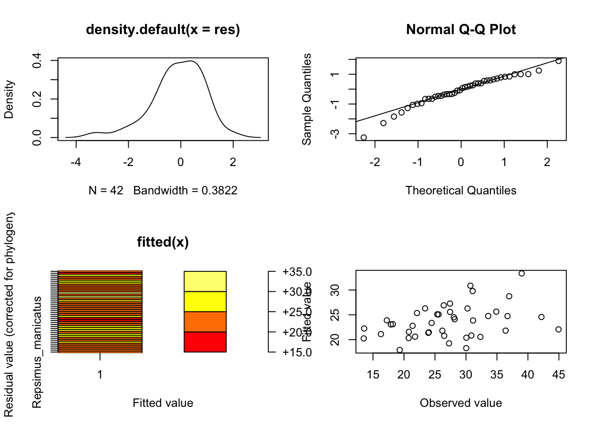
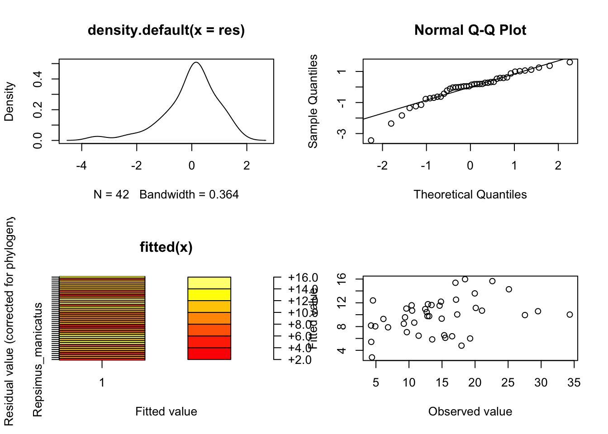
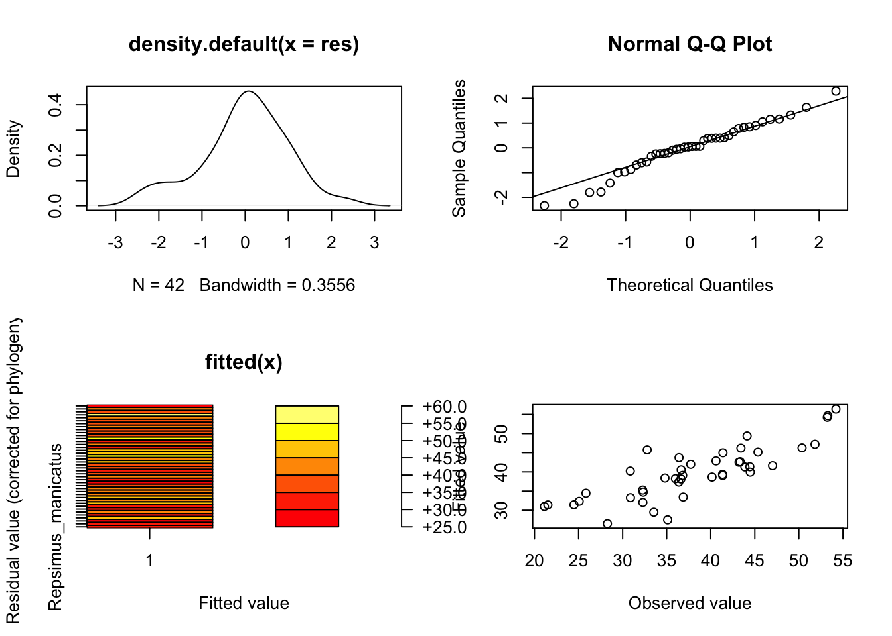
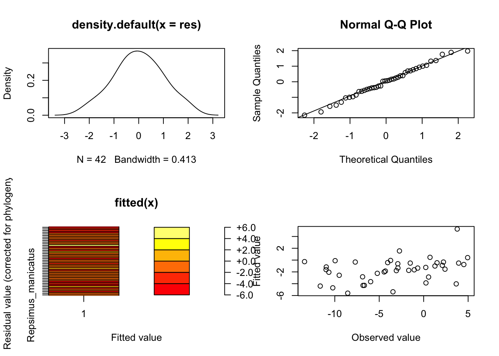
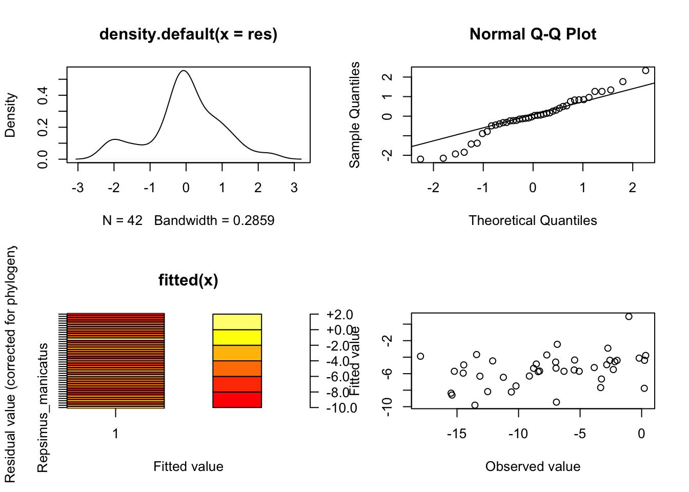
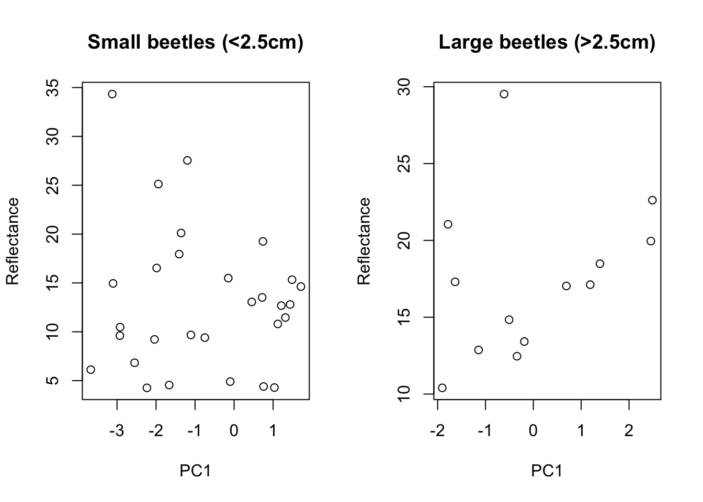
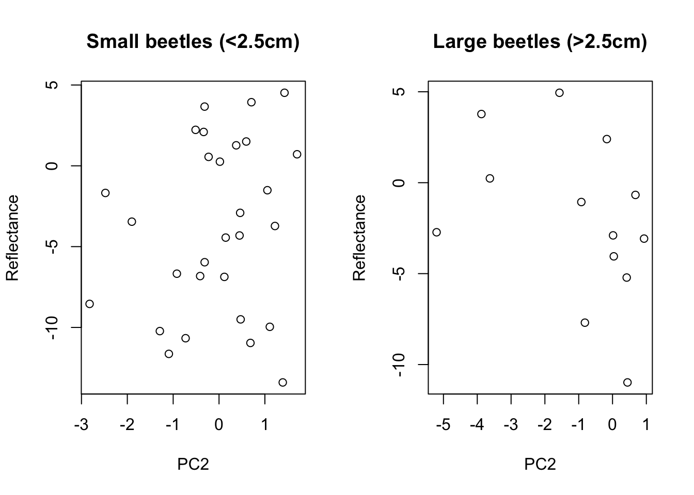
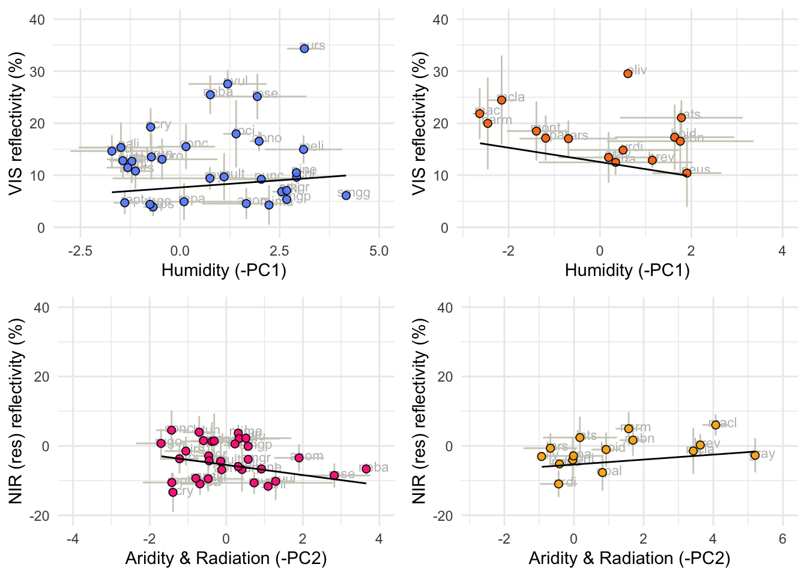
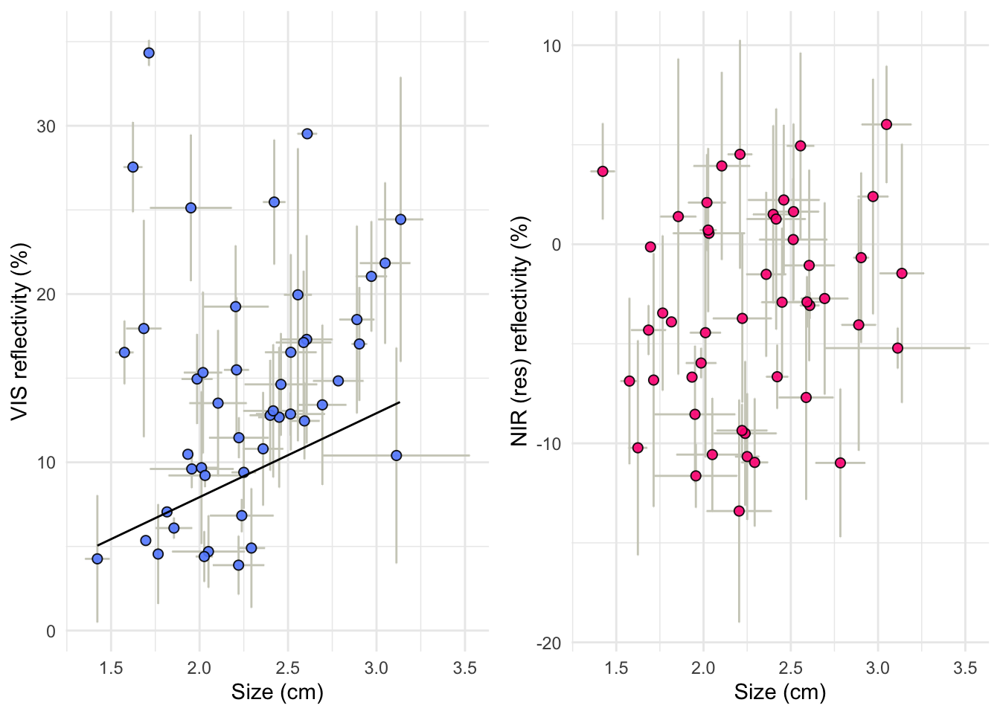

In this script we use a combination of phylogenetically controlled models to evaluate if VIS and NIR reflectivity in the Christmas beetles’ elytra can be predicted by climate and size. Climate here is determined by the ecological variables: maximum temperature, number of days above 35°C, solar radiation, cloud cover, rain, water vapour and aridity summarised in two principal components.
# We source the libraries from this file:
source(here::here("Scripts/MacroEcol_1_Libraries.R"))
Reflectivity data
Initially we import the reflectivity data obtained in the script “optical properties” and join it with the environmental data obtained in “Ecological variables”
# Consolidated by individual
Cons1 <- read.csv(here::here("Data/FromCode/ConsReflEcolInd.csv"))[-1] %>%
dplyr::filter(
!str_detect(ind, "xyls"),
!str_detect(ind, "prsi"),
!str_detect(ind, "xyle"),
!str_detect(ind, "pczo"),
!str_detect(ind, "pczp"),
!str_detect(ind, "pczv")
)
# Consolidated by species
Cons1agg <- read.csv(here::here("Data/FromCode/ConsolidatedReflectivitySpp.csv"))[-1] %>%
dplyr::arrange(phylogeny_name) %>%
filter(phylogeny_name %in% Cons1$phylogeny_name)
# PC Values
PCValuesF <- read.csv(here::here("Data/FromCode/PCsbySpp.csv"))[-1] %>%
dplyr::arrange(phylogeny_name) %>%
filter(phylogeny_name %in% Cons1$phylogeny_name)
# Merge
Cons1agg$PC1 <- PCValuesF$PC1_1
Cons1agg$PC2 <- PCValuesF$PC2_1
Phylogenetic data
In our analyses we use a subset of the 1300 posterior sample trees to represent the phylogenetic information accounting for uncertainty in node ages and topology:
# Set subset limits
trees_subset_min<-1000
trees_subset_max<-2000Import phylogeny (multiple trees)
trees <- ape::read.tree(here::here("Data/XMAS_mat2b_bst2ef_set23nn2_pinct.nwk"))
MCCtree <-
ape::read.nexus(here::here("Data/xmas_mat2b_bst2ef_set23nn2_pinct_med.tre"))The MCC (Maximum clade credibility) tree used here is the BEAST MCC tree. We did not need to prun the tree. The equivalence between specie sin the tree and data frame was tested in previous steps (tab optical properties).
Merge
# Modify to make it compatible with tree tips
Cons1agg <- as.data.frame(Cons1agg) # convert to a data frame
rownames(Cons1agg) <- Cons1agg[, 1] # make species the row names
ConsAgg <- Cons1agg [,2:length(Cons1agg)] # eliminate spp name (redundant)The names between data and tree tips should match.
# Test if the species are the same
identical(
length(name.check(MCCtree, Cons1agg$phylogeny_name)$tree_not_data),
length(Cons1agg$phylogeny_name)
)## [1] FALSE Subsets
Create subsets for each spectral band. In these subsets the response variable is always called “response” so that we can use the same function to run various models.
In this script, the response variable is the reflectance on each spectral band or the NIR/VIS residuals.
ALLDataSet <-
Cons1agg %>%
dplyr::select (-VIS, -NIR, - Res, -FRS, -FRS2) %>%
dplyr::rename ("Response" = TOT)
NIRDataSet <-
Cons1agg %>%
dplyr::select (-TOT, -VIS, - Res, -FRS, -FRS2) %>%
dplyr::rename ("Response" = NIR)
VISDataSet <-
Cons1agg %>%
dplyr::select (-TOT, -NIR, - Res, -FRS, -FRS2) %>%
dplyr::rename ("Response" = VIS)
ResDataSet <-
Cons1agg %>%
dplyr::select (-TOT, -NIR, -VIS, -FRS, -FRS2) %>%
dplyr::rename ("Response" = Res)
NmoDataSet <-
Cons1agg %>%
dplyr::select (-TOT, - Res, -FRS, -FRS2) %>% # keep VIS as predictor
dplyr::rename ("Response" = NIR) # Raw NIR
FRSDataSet <-
Cons1agg %>%
dplyr::select (-TOT, -NIR, -VIS, -Res, -FRS2) %>%
dplyr::rename ("Response" = FRS) # PGLS Residuals
PRSDataSet <-
Cons1agg %>%
dplyr::select (-TOT, -NIR, -VIS, -Res, -FRS) %>%
dplyr::rename ("Response" = FRS2) # PGLS Phyres residualsThe PGLS function has to be adapted to the data frame and model on each case
PGLS in the MCC
comp_data <- comparative.data(
phy = MCCtree, data = Cons1agg,
names.col = "phylogeny_name", vcv = TRUE,
na.omit = FALSE, warn.dropped = TRUE
)## Warning in comparative.data(phy = MCCtree, data = Cons1agg, names.col = "phylogeny_name", : Data dropped in compiling comparative
## data objectPGLS Multiple Trees with 5 predictors + intercept
Source function
note that this function has to be adapted to the data frame and model on each case
# function C is for reflectance as response
source(here::here("Scripts/8_multiple_pgls_function_C.R"))Define model
MuPGLSMod2 <- Response ~ PC1 + PC2 + size + PC1*size + PC2*sizePGLS in multiple trees for NIR contains 6 predictors + intercept. The extra predictor here is the “VIS” reflectance to account for the correlation of these two variables.
# function D: NIR explained by PCs and VIS
source(here::here("Scripts/9_multiple_pgls_function_D.R"))Define model
MuPGLSMod3 <- Response ~ PC1 + PC2 + size + PC1*size + PC2*size + VISPGLS Multiple Trees with 3 predictors + intercept
We run simplified models with only one pc for each spectral band including only the predictors that were signifficant in the full model. (because the visible reflectance seems to be more correlated to PC1 and the NIR to PC2)
Source function
note that this function has to be adapted to the data frame and model on each case
# function E: simplified. One PC and size
source(here::here("Scripts/10_multiple_pgls_function_E.R"))Define model
MuPGLSMod4 <- Response ~ PC + size + PC*size PGLS Multiple Trees with 4 predictors + intercept
We run simplified models with only one pc for each spectral band including only the predictors that were signifficant in the full model (because the visible reflectance seems to be more correlated to PC1 and the NIR to PC2). However, for NIR we need to include VIS reflectance as a predictor
Source function
note that this function has to be adapted to the data frame and model on each case
# F: One PC, size and VIS as predictors
source(here::here("Scripts/11_multiple_pgls_function_F.R"))Define model
MuPGLSMod5 <- Response ~ PC + size + PC*size + VISThe PGLS model tests if the correlations we found in the previous step remain after correcting by phylogeny. This model does not consider instraspecific variation. We averaged both location and reflectivity and obtained only one value per species.
pglsmodTOT <- pgls(TOT ~ PC1 + PC2 + size + PC1*size + PC2*size,
data = comp_data, param.CI = 0.95, lambda = "ML"
)
FinMccTotc <- as.numeric(round(summary(pglsmodTOT)$coefficients[,1],3))
FinMccTotp <- as.numeric(round(summary(pglsmodTOT)$coefficients[,4],3)) runsTOT<-lapply(trees[trees_subset_min:trees_subset_max],
pgls_runC,
model=MuPGLSMod2,
dataset=ALLDataSet) ## ERROR : Problem with optim:52ERROR: ABNORMAL_TERMINATION_IN_LNSRCHdfTOT <- ldply (runsTOT, data.frame)
write.csv(dfTOT, here::here("Data/FromCode/MuTPglsResultsTOT_QC.csv"))
FinTotM <- HPDinterval(as.mcmc(dfTOT))pglsmodVIS <- pgls(VIS ~ PC1 + PC2 + size + PC1*size + PC2*size,
data = comp_data, param.CI = 0.95, lambda = "ML"
)
FinMccVisc <- as.numeric(round(summary(pglsmodVIS)$coefficients[,1],3))
FinMccVisp <- as.numeric(round(summary(pglsmodVIS)$coefficients[,4],3))runsVIS<-lapply(trees[trees_subset_min:trees_subset_max],
pgls_runC,
model=MuPGLSMod2,
dataset=VISDataSet)
dfVIS <- ldply (runsVIS, data.frame)
write.csv(dfVIS, here::here("Data/FromCode/MuTPglsResultsVIS_QC.csv"))
FinVisM <- HPDinterval(as.mcmc(dfVIS))spglsmodVIS <- pgls(VIS ~ PC1 + size + PC1*size,
data = comp_data, param.CI = 0.95, lambda = "ML"
)
summary(spglsmodVIS) ##
## Call:
## pgls(formula = VIS ~ PC1 + size + PC1 * size, data = comp_data,
## lambda = "ML", param.CI = 0.95)
##
## Residuals:
## Min 1Q Median 3Q Max
## -9.3779 -1.6848 0.3588 1.5383 3.4719
##
## Branch length transformations:
##
## kappa [Fix] : 1.000
## lambda [ ML] : 1.000
## lower bound : 0.000, p = 0.0084147
## upper bound : 1.000, p = 1
## 95.0% CI : (0.695, NA)
## delta [Fix] : 1.000
##
## Coefficients:
## Estimate Std. Error t value Pr(>|t|)
## (Intercept) -2.4691 9.0549 -0.2727 0.78658
## PC1 -5.8156 2.6312 -2.2103 0.03318 *
## size 5.4531 2.5683 2.1232 0.04031 *
## PC1:size 2.4594 1.0881 2.2602 0.02962 *
## ---
## Signif. codes: 0 '***' 0.001 '**' 0.01 '*' 0.05 '.' 0.1 ' ' 1
##
## Residual standard error: 2.982 on 38 degrees of freedom
## Multiple R-squared: 0.1701, Adjusted R-squared: 0.1046
## F-statistic: 2.596 on 3 and 38 DF, p-value: 0.06651sFinMccVisc <- as.numeric(round(summary(spglsmodVIS)$coefficients[,1],3))
sFinMccVisp <- as.numeric(round(summary(spglsmodVIS)$coefficients[,4],3))First step is to modify the data frame.
SimpleVIS <-
VISDataSet %>%
dplyr::select(phylogeny_name, Response, size, PC1) %>%
dplyr::rename(PC = PC1)
SimpleVIS <- as.data.frame(SimpleVIS)Now run the model
runsVISsimple<-lapply(trees[trees_subset_min:trees_subset_max],
pgls_runE,
model=MuPGLSMod4,
dataset=SimpleVIS) ## ERROR : Problem with optim:52ERROR: ABNORMAL_TERMINATION_IN_LNSRCHdfVISsimple <- ldply (runsVISsimple, data.frame)
FinVisS <- HPDinterval(as.mcmc(dfVISsimple))pglsmodNIR <- pgls(NIR ~ PC1 + PC2 + size + PC1*size + PC2*size + VIS,
data = comp_data, param.CI = 0.95, lambda = "ML"
)
FinMccNirc <- as.numeric(round(summary(pglsmodNIR)$coefficients[,1],3))
FinMccNirp <- as.numeric(round(summary(pglsmodNIR)$coefficients[,4],3))runsNIR<-lapply(trees[trees_subset_min:trees_subset_max],
pgls_runD,
model=MuPGLSMod3,
dataset=NmoDataSet) ## ERROR : Problem with optim:52ERROR: ABNORMAL_TERMINATION_IN_LNSRCH
## ERROR : Problem with optim:52ERROR: ABNORMAL_TERMINATION_IN_LNSRCH
## ERROR : Problem with optim:52ERROR: ABNORMAL_TERMINATION_IN_LNSRCH
## ERROR : Problem with optim:52ERROR: ABNORMAL_TERMINATION_IN_LNSRCH
## ERROR : Problem with optim:52ERROR: ABNORMAL_TERMINATION_IN_LNSRCH
## ERROR : Problem with optim:52ERROR: ABNORMAL_TERMINATION_IN_LNSRCHdfNIR <- ldply (runsNIR, data.frame)
write.csv(dfNIR, here::here("Data/FromCode/MuTPglsResultsNmo_QC.csv"))
FinNirM <- HPDinterval(as.mcmc(dfNIR))spglsmodNIR <- pgls(NIR ~ PC2 + size + PC2*size + VIS,
data = comp_data, param.CI = 0.95, lambda = "ML"
)
sFinMccNirc <- as.numeric(round(summary(spglsmodNIR)$coefficients[,1],3))
sFinMccNirp <- as.numeric(round(summary(spglsmodNIR)$coefficients[,4],3))First step is to modify the data frame.
SimpleNIR <-
NmoDataSet %>%
dplyr::select(phylogeny_name, Response, size, VIS, PC2) %>%
dplyr::rename(PC = PC2)
SimpleNIR <- as.data.frame(SimpleNIR)Now run the model
runsNIRsimple<-lapply(trees[trees_subset_min:trees_subset_max],
pgls_runF,
model=MuPGLSMod5,
dataset=SimpleNIR) ## ERROR : Problem with optim:52ERROR: ABNORMAL_TERMINATION_IN_LNSRCH
## ERROR : Problem with optim:52ERROR: ABNORMAL_TERMINATION_IN_LNSRCH
## ERROR : Problem with optim:52ERROR: ABNORMAL_TERMINATION_IN_LNSRCHdfNIRsimple <- ldply (runsNIRsimple, data.frame)
FinNirS <- HPDinterval(as.mcmc(dfNIRsimple))Residuals between NIR ~ VIS reflectance without phylogenetic correction
pglsmodRes <- pgls(Res ~ PC1 + PC2 + size + PC1*size + PC2*size,
data = comp_data, param.CI = 0.95, lambda = "ML", bounds = list(lambda=c(1e-5,1)) # modify bounds (defaults are c(1e-6,1))
)
FinMccResc <- as.numeric(round(summary(pglsmodRes)$coefficients[,1],3))
FinMccResp <- as.numeric(round(summary(pglsmodRes)$coefficients[,4],3))(i.e. residuals between NIR ~ VIS)
runsRes<-lapply(trees[trees_subset_min:trees_subset_max],
pgls_runC,
model=MuPGLSMod2,
dataset=ResDataSet) ## ERROR : Problem with optim:52ERROR: ABNORMAL_TERMINATION_IN_LNSRCH
## ERROR : Problem with optim:52ERROR: ABNORMAL_TERMINATION_IN_LNSRCH
## ERROR : Problem with optim:52ERROR: ABNORMAL_TERMINATION_IN_LNSRCH
## ERROR : Problem with optim:52ERROR: ABNORMAL_TERMINATION_IN_LNSRCH
## ERROR : Problem with optim:52ERROR: ABNORMAL_TERMINATION_IN_LNSRCH
## ERROR : Problem with optim:52ERROR: ABNORMAL_TERMINATION_IN_LNSRCHdfRes <- ldply (runsRes, data.frame)
write.csv(dfRes, here::here("Data/FromCode/MuTPglsResultsRes_QC.csv"))
FinResM <- HPDinterval(as.mcmc(dfRes))spglsmodRes <- pgls(Res ~ PC2 + size + PC2*size,
data = comp_data, param.CI = 0.95, lambda = "ML"
)
sFinMccResc <- as.numeric(round(summary(spglsmodRes)$coefficients[,1],3))
sFinMccResp <- as.numeric(round(summary(spglsmodRes)$coefficients[,4],3))First step is to modify the data frame.
SimpleRes <-
ResDataSet %>%
dplyr::select(phylogeny_name, Response, size, PC2) %>%
dplyr::rename(PC = PC2)
SimpleRes <- as.data.frame(SimpleRes)Now run the model
runsRessimple<-lapply(trees[trees_subset_min:trees_subset_max],
pgls_runE,
model=MuPGLSMod4,
dataset=SimpleRes) ## ERROR : Problem with optim:52ERROR: ABNORMAL_TERMINATION_IN_LNSRCH
## ERROR : Problem with optim:52ERROR: ABNORMAL_TERMINATION_IN_LNSRCH
## ERROR : Problem with optim:52ERROR: ABNORMAL_TERMINATION_IN_LNSRCHdfRessimple <- ldply (runsRessimple, data.frame)
FinResS <- HPDinterval(as.mcmc(dfRessimple))Residuals between NIR ~ VIS corrected by phylogeny. Extracted as model$residuals
pglsmodFRS <- pgls(FRS ~ PC1 + PC2 + size + PC1*size + PC2*size,
data = comp_data, param.CI = 0.95, lambda = "ML"
)
FinMccFRSc <- as.numeric(round(summary(pglsmodFRS)$coefficients[,1],3))
FinMccFRSp <- as.numeric(round(summary(pglsmodFRS)$coefficients[,4],3))(i.e. Residuals between NIR ~ VIS corrected by phylogeny)
runsFRS<-lapply(trees[trees_subset_min:trees_subset_max],
pgls_runC,
model=MuPGLSMod2,
dataset=FRSDataSet) ## ERROR : Problem with optim:52ERROR: ABNORMAL_TERMINATION_IN_LNSRCH
## ERROR : Problem with optim:52ERROR: ABNORMAL_TERMINATION_IN_LNSRCH
## ERROR : Problem with optim:52ERROR: ABNORMAL_TERMINATION_IN_LNSRCH
## ERROR : Problem with optim:52ERROR: ABNORMAL_TERMINATION_IN_LNSRCH
## ERROR : Problem with optim:52ERROR: ABNORMAL_TERMINATION_IN_LNSRCH
## ERROR : Problem with optim:52ERROR: ABNORMAL_TERMINATION_IN_LNSRCH
## ERROR : Problem with optim:52ERROR: ABNORMAL_TERMINATION_IN_LNSRCHdfFRS <- ldply (runsFRS, data.frame)
write.csv(dfFRS, here::here("Data/FromCode/MuTPglsResultsFRS_QC.csv"))
FinFRSM <- HPDinterval(as.mcmc(dfFRS))spglsmodFRS <- pgls(FRS ~ PC2 + size + PC2*size,
data = comp_data, param.CI = 0.95, lambda = "ML"
)
sFinMccFRSc <- as.numeric(round(summary(spglsmodFRS)$coefficients[,1],3))
sFinMccFRSp <- as.numeric(round(summary(spglsmodFRS)$coefficients[,4],3))First step is to modify the data frame.
SimpleFRS <-
FRSDataSet %>%
dplyr::select(phylogeny_name, Response, size, PC2) %>%
dplyr::rename(PC = PC2)
SimpleFRS <- as.data.frame(SimpleFRS)Now run the model
runsFRSsimple<-lapply(trees[trees_subset_min:trees_subset_max],
pgls_runE,
model=MuPGLSMod4,
dataset=SimpleFRS) ## ERROR : Problem with optim:52ERROR: ABNORMAL_TERMINATION_IN_LNSRCH
## ERROR : Problem with optim:52ERROR: ABNORMAL_TERMINATION_IN_LNSRCH
## ERROR : Problem with optim:52ERROR: ABNORMAL_TERMINATION_IN_LNSRCH
## ERROR : Problem with optim:52ERROR: ABNORMAL_TERMINATION_IN_LNSRCH
## ERROR : Problem with optim:52ERROR: ABNORMAL_TERMINATION_IN_LNSRCH
## ERROR : Problem with optim:52ERROR: ABNORMAL_TERMINATION_IN_LNSRCHdfFRSsimple <- ldply (runsFRSsimple, data.frame)
FinFRSS <-HPDinterval(as.mcmc(dfFRSsimple))Residuals between NIR ~ VIS corrected by phylogeny. Phylogenetic signal eliminated by the PGLS correction. Extracted as model$phyres.
pglsmodPRS <- pgls(FRS2 ~ PC1 + PC2 + size + PC1*size + PC2*size,
data = comp_data, param.CI = 0.95, lambda = "ML"
)
FinMccPRSc <- as.numeric(round(summary(pglsmodPRS)$coefficients[,1],3))
FinMccPRSp <- as.numeric(round(summary(pglsmodPRS)$coefficients[,4],3))runsPRS<-lapply(trees[trees_subset_min:trees_subset_max],
pgls_runC,
model=MuPGLSMod2,
dataset=PRSDataSet)
dfPRS <- ldply (runsPRS, data.frame)
write.csv(dfPRS, here::here("Data/FromCode/MuTPglsResultsFRS_QC.csv"))
FinPRSM <- HPDinterval(as.mcmc(dfPRS))spglsmodPRS <- pgls(FRS2 ~ PC2 + size + PC2*size,
data = comp_data, param.CI = 0.95, lambda = "ML"
)
sFinMccPRSc <- as.numeric(round(summary(spglsmodPRS)$coefficients[,1],3))
sFinMccPRSp <- as.numeric(round(summary(spglsmodPRS)$coefficients[,4],3))First step is to modify the data frame.
SimplePRS <-
PRSDataSet %>%
dplyr::select(phylogeny_name, Response, size, PC2) %>%
dplyr::rename(PC = PC2)
SimplePRS <- as.data.frame(SimplePRS)Now run the model
runsPRSsimple<-lapply(trees[trees_subset_min:trees_subset_max],
pgls_runE,
model=MuPGLSMod4,
dataset=SimplePRS)
dfPRSsimple <- ldply (runsPRSsimple, data.frame)
FinPRSS <-HPDinterval(as.mcmc(dfPRSsimple))Predictor <- c("PC1","PC1 p-val" ,
"PC2", "PC2 p-val",
"Size", "Size p-val",
"VIS", "VIS p-val",
"PC1:size", "PC1:size p-val",
"PC2:size", "PC2:size p-val")
# Arrange the vectors to build the data frame
# New vectors alternate coefficient and p-values to match "predictors"
Toti <- as.character(as.numeric(c(rbind((c(
FinMccTotc[2:4],"NA",FinMccTotc[5:6])),
(c(FinMccTotp[2:4],"NA",FinMccTotp[5:6]))))))
Visi <- as.character(as.numeric(c(rbind((c(
FinMccVisc[2:4],"NA",FinMccVisc[5:6])),
(c(FinMccVisp[2:4],"NA",FinMccVisp[5:6]))))))
Niri <- as.character(as.numeric(c(rbind(
FinMccNirc[2:7], FinMccNirp[2:7]))))
FRSi <- as.character(as.numeric(c(rbind((c(
FinMccFRSc[2:4],"NA",FinMccFRSc[5:6])),
(c(FinMccFRSp[2:4],"NA",FinMccFRSp[5:6]))))))
PRSi <- as.character(as.numeric(c(rbind((c(
FinMccPRSc[2:4],"NA",FinMccPRSc[5:6])),
(c(FinMccPRSp[2:4],"NA",FinMccPRSp[5:6]))))))
# This section colours the signifficant p-values and their coefficients
Visi[1] <- cell_spec(Visi[1],bold = TRUE, color="#D40481")
Visi[2] <- cell_spec(Visi[2],bold = TRUE)
Visi[5] <- cell_spec(Visi[5],bold = TRUE, color="#D40481")
Visi[6] <- cell_spec(Visi[6],bold = TRUE)
Visi[9] <- cell_spec(Visi[9],bold = TRUE, color="#D40481")
Visi[10] <- cell_spec(Visi[10],bold = TRUE)
Niri[3] <- cell_spec(Niri[3],bold = TRUE, color="#D40481")
Niri[4] <- cell_spec(Niri[4],bold = TRUE)
Niri[7] <- cell_spec(Niri[7],bold = TRUE, color="#D40481")
Niri[8] <- cell_spec(Niri[8],bold = TRUE)
Niri[11] <- cell_spec(Niri[11],bold = TRUE, color="#D40481")
Niri[12] <- cell_spec(Niri[12],bold = TRUE)
FRSi[3] <- cell_spec(FRSi[3],bold = TRUE, color="#D40481")
FRSi[4] <- cell_spec(FRSi[4],bold = TRUE)
FRSi[11] <- cell_spec(FRSi[11],bold = TRUE, color="#D40481")
FRSi[12] <- cell_spec(FRSi[12],bold = TRUE)
# Assemble the table
Resultspgls <- data.frame(Predictor,
"TOT" = Toti,
"VIS" = Visi,
"NIR" = Niri,
"Res" = FRSi,
"Phr" = PRSi)
Resultspgls %>%
kbl(align ="c", escape = FALSE) %>%
kable_classic() %>%
add_indent(c(1, 3, 5, 7, 9)) | Predictor | TOT | VIS | NIR | Res | Phr |
|---|---|---|---|---|---|
| PC1 | -5.388 | -5.952 | 0.862 | 1.398 | 0.763 |
| PC1 p-val | 0.129 | 0.078 | 0.753 | 0.594 | 0.666 |
| PC2 | -5.777 | -8.513 | 4.996 | 5.801 | -0.739 |
| PC2 p-val | 0.205 | 0.052 | 0.177 | 0.1 | 0.741 |
| Size | 8.54 | 7.883 | 0.661 | -0.088 | 1.114 |
| Size p-val | 0.019 | 0.021 | 0.815 | 0.973 | 0.47 |
| VIS | NA | NA | 0.969 | NA | NA |
| VIS p-val | NA | NA | 0 | NA | NA |
| PC1:size | 2.56 | 2.646 | -0.136 | -0.38 | -0.452 |
| PC1:size p-val | 0.091 | 0.066 | 0.908 | 0.735 | 0.552 |
| PC2:size | 2.087 | 3.175 | -2.05 | -2.355 | 0.393 |
| PC2:size p-val | 0.247 | 0.067 | 0.163 | 0.094 | 0.66 |
rvTOTl <- as.character(
round(as.numeric(c(
FinTotM[1,1],FinTotM[3,1],FinTotM[4,1],FinTotM[6,1],
FinTotM[7,1],FinTotM[9,1],"NA","NA",
FinTotM[10,1],FinTotM[12,1],
FinTotM[13,1],FinTotM[15,1])),3))
rvTOTu <- as.character(
format(round(as.numeric(c(
FinTotM[1,2],FinTotM[3,2],FinTotM[4,2],FinTotM[6,2],
FinTotM[7,2],FinTotM[9,2],"NA","NA",
FinTotM[10,2],FinTotM[12,2],
FinTotM[13,2],FinTotM[15,2])),3),nsmall=3))
rvVISl <- as.character(
format(round(as.numeric(c(
FinVisM[1,1],FinVisM[3,1],FinVisM[4,1],FinVisM[6,1],
FinVisM[7,1],FinVisM[9,1],"NA","NA",
FinVisM[10,1],FinVisM[12,1],
FinVisM[13,1],FinVisM[15,1])),3),nsmall=3))
rvVISu <- as.character(
format(round(as.numeric(c(
FinVisM[1,2],FinVisM[3,2],FinVisM[4,2],FinVisM[6,2],
FinVisM[7,2],FinVisM[9,2],"NA","NA",
FinVisM[10,2],FinVisM[12,2],
FinVisM[13,2],FinVisM[15,2])),3),nsmall=3))
rvNIRl <- as.character(
format(round(as.numeric(c(
FinNirM[1,1],FinNirM[3,1],FinNirM[4,1],FinNirM[6,1],
FinNirM[7,1],FinNirM[9,1],FinNirM[10,1],FinNirM[12,1],
FinNirM[13,1],FinNirM[15,1], FinNirM[16,1],FinNirM[18,1]
)),3),nsmall=3))
rvNIRu <- as.character(
format(round(as.numeric(c(
FinNirM[1,2],FinNirM[3,2],FinNirM[4,2],FinNirM[6,2],
FinNirM[7,2],FinNirM[9,2],FinNirM[10,2],FinNirM[12,2],
FinNirM[13,2],FinNirM[15,2], FinNirM[16,2],FinNirM[18,2]
)),3),nsmall=3))
rvFRSl <- as.character(
format(round(as.numeric(c(
FinFRSM[1,1],FinFRSM[3,1],FinFRSM[4,1],FinFRSM[6,1],
FinFRSM[7,1],FinFRSM[9,1],"NA","NA",
FinFRSM[10,1],FinFRSM[12,1],
FinFRSM[13,1],FinFRSM[15,1])),3),nsmall=3))
rvFRSu <- as.character(
format(round(as.numeric(c(
FinFRSM[1,2],FinFRSM[3,2],FinFRSM[4,2],FinFRSM[6,2],
FinFRSM[7,2],FinFRSM[9,2],"NA","NA",
FinFRSM[10,2],FinFRSM[12,2],
FinFRSM[13,2],FinFRSM[15,2])),3),nsmall=3))
rvPRSl <- as.character(
format(round(as.numeric(c(
FinPRSM[1,1],FinPRSM[3,1],FinPRSM[4,1],FinPRSM[6,1],
FinPRSM[7,1],FinPRSM[9,1],"NA","NA",
FinPRSM[10,1],FinPRSM[12,1],
FinPRSM[13,1],FinPRSM[15,1])),3),nsmall=3))
rvPRSu <- as.character(
format(round(as.numeric(c(
FinPRSM[1,2],FinPRSM[3,2],FinPRSM[4,2],FinPRSM[6,2],
FinPRSM[7,2],FinPRSM[9,2],"NA","NA",
FinPRSM[10,2],FinPRSM[12,2],
FinPRSM[13,2],FinPRSM[15,2])),3),nsmall=3))
rvTOTi<-paste(rvTOTl,rvTOTu, sep = " ; ")
rvVISi<-paste(rvVISl,rvVISu, sep = " ; ")
rvNIRi<-paste(rvNIRl,rvNIRu, sep = " ; ")
rvFRSi<-paste(rvFRSl,rvFRSu, sep = " ; ")
rvPRSi<-paste(rvPRSl,rvPRSu, sep = " ; ")
rvVISi[1] <- cell_spec(rvVISi[1],bold = TRUE, color="#367D91")
rvVISi[2] <- cell_spec(rvVISi[2],bold = TRUE, color="#B2B9BF")
rvVISi[5] <- cell_spec(rvVISi[5],bold = TRUE, color="#D40481")
rvVISi[6] <- cell_spec(rvVISi[6],bold = TRUE)
rvVISi[9] <- cell_spec(rvVISi[9],bold = TRUE, color="#367D91")
rvVISi[10] <- cell_spec(rvVISi[10],bold = TRUE, color="#B2B9BF")
rvNIRi[3] <- cell_spec(rvNIRi[3],bold = TRUE, color="#D40481")
rvNIRi[4] <- cell_spec(rvNIRi[4],bold = TRUE)
rvNIRi[7] <- cell_spec(rvNIRi[7],bold = TRUE, color="#D40481")
rvNIRi[8] <- cell_spec(rvNIRi[8],bold = TRUE)
rvNIRi[11] <- cell_spec(rvNIRi[11],bold = TRUE, color="#D40481")
rvNIRi[12] <- cell_spec(rvNIRi[12],bold = TRUE)
rvFRSi[3] <- cell_spec(rvFRSi[3],bold = TRUE, color="#D40481")
rvFRSi[4] <- cell_spec(rvFRSi[4],bold = TRUE)
rvFRSi[11] <- cell_spec(rvFRSi[11],bold = TRUE, color="#D40481")
rvFRSi[12] <- cell_spec(rvFRSi[12],bold = TRUE)
Resultspgls <- data.frame(Predictor,
"TOT" = rvTOTi,
"VIS" = rvVISi,
"NIR" = rvNIRi,
"Res" = rvFRSi,
"Phr" = rvPRSi)
Resultspgls %>%
kbl(align ="c", escape = FALSE) %>%
kable_classic() %>%
add_indent(c(1, 3, 5, 7, 9)) | Predictor | TOT | VIS | NIR | Res | Phr |
|---|---|---|---|---|---|
| PC1 | -7.049 ; -4.286 | -7.468 ; -4.959 | -0.170 ; 1.414 | 0.533 ; 1.986 | 0.763 ; 0.763 |
| PC1 p-val | 0.046 ; 0.196 | 0.022 ; 0.118 | 0.643 ; 0.993 | 0.445 ; 0.837 | 0.666 ; 0.666 |
| PC2 | -7.907 ; -3.816 | -10.130 ; -6.962 | 2.799 ; 6.543 | 3.593 ; 7.236 | -0.739 ; -0.739 |
| PC2 p-val | 0.089 ; 0.346 | 0.018 ; 0.107 | 0.042 ; 0.413 | 0.027 ; 0.282 | 0.741 ; 0.741 |
| Size | 7.466 ; 10.141 | 6.860 ; 9.275 | -0.314 ; 2.034 | -0.791 ; 1.097 | 1.114 ; 1.114 |
| Size p-val | 0.005 ; 0.040 | 0.007 ; 0.038 | 0.476 ; 0.999 | 0.690 ; 1.000 | 0.470 ; 0.470 |
| VIS | NA ; NA | NA ; NA | 0.930 ; 1.009 | NA ; NA | NA ; NA |
| VIS p-val | NA ; NA | NA ; NA | 0.000 ; 0.000 | NA ; NA | NA ; NA |
| PC1:size | 2.072 ; 3.174 | 2.225 ; 3.237 | -0.379 ; 0.398 | -0.621 ; 0.080 | -0.452 ; -0.452 |
| PC1:size p-val | 0.028 ; 0.143 | 0.020 ; 0.103 | 0.724 ; 1.000 | 0.628 ; 0.999 | 0.552 ; 0.552 |
| PC2:size | 1.243 ; 2.853 | 2.502 ; 3.762 | -2.597 ; -1.196 | -2.867 ; -1.507 | 0.393 ; 0.393 |
| PC2:size p-val | 0.109 ; 0.405 | 0.025 ; 0.126 | 0.065 ; 0.394 | 0.032 ; 0.257 | 0.660 ; 0.660 |
We run reduced models with the predictors that were signifficant in the MCC tree to confirm the patterns and to reduce issues with the abnormal termination in some trees (because in larger models some parameters can’t be calculated when using particular trees)
In this table PC represents the relevant PC for each band: For VIS it is PC1 and for NIR/Res it is PC2. This is also true for the correspondent interactions.
sPredictor <- c("PC","PC p-val" ,
"Size", "Size p-val",
"VIS", "VIS p-val",
"PC:size", "PC:size p-val")
# Arrange the vectors to build the data frame
# New vectors alternate coefficient and p-values to match "predictors"
sVisi <- as.character(as.numeric(c(rbind((c(
sFinMccVisc[2:3],"NA",sFinMccVisc[4])),
(c(sFinMccVisp[2:3],"NA",sFinMccVisp[4]))))))
sNiri <- as.character(as.numeric(c(rbind(
sFinMccNirc[2:5], sFinMccNirp[2:5]))))
sFRSi <- as.character(as.numeric(c(rbind((c(
sFinMccFRSc[2:3],"NA",sFinMccFRSc[4])),
(c(sFinMccFRSp[2:3],"NA",sFinMccFRSp[4]))))))
sPRSi <- as.character(as.numeric(c(rbind((c(
sFinMccPRSc[2:3],"NA",sFinMccPRSc[4])),
(c(sFinMccPRSp[2:3],"NA",sFinMccPRSp[4]))))))
# This section colours the signifficant p-values and their coefficients
sVisi[1] <- cell_spec(sVisi[1],bold = TRUE, color="#D40481")
sVisi[2] <- cell_spec(sVisi[2],bold = TRUE)
sVisi[3] <- cell_spec(sVisi[3],bold = TRUE, color="#D40481")
sVisi[4] <- cell_spec(sVisi[4],bold = TRUE)
sVisi[7] <- cell_spec(sVisi[7],bold = TRUE, color="#D40481")
sVisi[8] <- cell_spec(sVisi[8],bold = TRUE)
sNiri[1] <- cell_spec(sNiri[1],bold = TRUE, color="#D40481")
sNiri[2] <- cell_spec(sNiri[2],bold = TRUE)
sNiri[5] <- cell_spec(sNiri[5],bold = TRUE, color="#D40481")
sNiri[6] <- cell_spec(sNiri[6],bold = TRUE)
sNiri[7] <- cell_spec(sNiri[7],bold = TRUE, color="#D40481")
sNiri[8] <- cell_spec(sNiri[8],bold = TRUE)
sFRSi[1] <- cell_spec(sFRSi[1],bold = TRUE, color="#D40481")
sFRSi[2] <- cell_spec(sFRSi[2],bold = TRUE)
sFRSi[7] <- cell_spec(sFRSi[7],bold = TRUE, color="#D40481")
sFRSi[8] <- cell_spec(sFRSi[8],bold = TRUE)
# Assemble the table
sResultspgls <- data.frame(sPredictor,
"VIS" = sVisi,
"NIR" = sNiri,
"Res" = sFRSi,
"Phr" = sPRSi)
sResultspgls %>%
kbl(align ="c", escape = FALSE) %>%
kable_classic() %>%
add_indent(c(1, 3, 5, 7)) | sPredictor | VIS | NIR | Res | Phr |
|---|---|---|---|---|
| PC | -5.816 | 6.013 | 6.533 | -1.671 |
| PC p-val | 0.033 | 0.074 | 0.046 | 0.408 |
| Size | 5.453 | 0.914 | 0.544 | 1.281 |
| Size p-val | 0.04 | 0.677 | 0.798 | 0.264 |
| VIS | NA | 0.975 | NA | NA |
| VIS p-val | NA | 0 | NA | NA |
| PC:size | 2.459 | -2.443 | -2.615 | 0.775 |
| PC:size p-val | 0.03 | 0.061 | 0.041 | 0.336 |
srvVISl <- as.character(
format(round(as.numeric(c(
FinVisS[1,1],FinVisS[3,1],
FinResS[4,1],FinVisS[6,1],"NA","NA",
FinVisS[7,1],FinVisS[9,1])),3),nsmall=3))
srvVISu <- as.character(
format(round(as.numeric(c(
FinVisS[1,2],FinVisS[3,2],
FinVisS[4,2],FinVisS[6,2],"NA","NA",
FinVisS[7,2],FinVisS[9,2])),3),nsmall=3))
srvNIRl <- as.character(
format(round(as.numeric(c(
FinNirS[1,1],FinNirS[3,1],
FinNirS[4,1],FinNirS[6,1],
FinNirS[7,1],FinNirS[9,1],
FinNirS[10,1],FinNirS[12,1]
)),3),nsmall=3))
srvNIRu <- as.character(
format(round(as.numeric(c(
FinNirS[1,2],FinNirS[3,2],
FinNirS[4,2],FinNirS[6,2],
FinNirS[7,2],FinNirS[9,2],
FinNirS[10,2],FinNirS[12,2]
)),3),nsmall=3))
srvFRSl <- as.character(
format(round(as.numeric(c(
FinFRSS[1,1],FinFRSS[3,1],
FinFRSS[4,1],FinFRSS[6,1],"NA","NA",
FinFRSS[7,1],FinFRSS[9,1])),3),nsmall=3))
srvFRSu <- as.character(
format(round(as.numeric(c(
FinFRSS[1,2],FinFRSS[3,2],
FinFRSS[4,2],FinFRSS[6,2],"NA","NA",
FinFRSS[7,2],FinFRSS[9,2])),3),nsmall=3))
srvPRSl <- as.character(
format(round(as.numeric(c(
FinPRSS[1,1],FinPRSS[3,1],
FinPRSS[4,1],FinPRSS[6,1],"NA","NA",
FinPRSS[7,1],FinPRSS[9,1])),3),nsmall=3))
srvPRSu <- as.character(
format(round(as.numeric(c(
FinPRSS[1,2],FinPRSS[3,2],
FinPRSS[4,2],FinPRSS[6,2],"NA","NA",
FinPRSS[7,2],FinPRSS[9,2])),3),nsmall=3))
srvVISi<-paste(srvVISl,srvVISu, sep = " ; ")
srvNIRi<-paste(srvNIRl,srvNIRu, sep = " ; ")
srvFRSi<-paste(srvFRSl,srvFRSu, sep = " ; ")
srvPRSi<-paste(srvPRSl,srvPRSu, sep = " ; ")
srvVISi[1] <- cell_spec(srvVISi[1],bold = TRUE, color="#D40481")
srvVISi[2] <- cell_spec(srvVISi[2],bold = TRUE)
srvVISi[3] <- cell_spec(srvVISi[3],bold = TRUE, color="#D40481")
srvVISi[4] <- cell_spec(srvVISi[4],bold = TRUE)
srvVISi[7] <- cell_spec(srvVISi[7],bold = TRUE, color="#D40481")
srvVISi[8] <- cell_spec(srvVISi[8],bold = TRUE)
srvNIRi[1] <- cell_spec(srvNIRi[1],bold = TRUE, color="#D40481")
srvNIRi[2] <- cell_spec(srvNIRi[2],bold = TRUE)
srvNIRi[5] <- cell_spec(srvNIRi[5],bold = TRUE, color="#D40481")
srvNIRi[6] <- cell_spec(srvNIRi[6],bold = TRUE)
srvNIRi[7] <- cell_spec(srvNIRi[7],bold = TRUE, color="#D40481")
srvNIRi[8] <- cell_spec(srvNIRi[8],bold = TRUE)
srvFRSi[1] <- cell_spec(srvFRSi[1],bold = TRUE, color="#D40481")
srvFRSi[2] <- cell_spec(srvFRSi[2],bold = TRUE)
srvFRSi[7] <- cell_spec(srvFRSi[7],bold = TRUE, color="#D40481")
srvFRSi[8] <- cell_spec(srvFRSi[8],bold = TRUE)
smResultspgls <- data.frame(sPredictor,
"VIS" = srvVISi,
"NIR" = srvNIRi,
"Res" = srvFRSi,
"Phr" = srvPRSi)
smResultspgls %>%
kbl(align ="c", escape = FALSE) %>%
kable_classic() %>%
add_indent(c(1, 3, 5, 7)) | sPredictor | VIS | NIR | Res | Phr |
|---|---|---|---|---|
| PC | -7.498 ; -4.872 | 4.652 ; 6.992 | 5.271 ; 7.547 | -1.671 ; -1.671 |
| PC p-val | 0.000 ; 0.069 | 0.024 ; 0.146 | 0.014 ; 0.098 | 0.408 ; 0.408 |
| Size | 0.167 ; 6.895 | 0.136 ; 2.019 | -0.110 ; 1.451 | 1.281 ; 1.281 |
| Size p-val | 0.005 ; 0.116 | 0.381 ; 0.964 | 0.530 ; 0.999 | 0.264 ; 0.264 |
| VIS | NA ; NA | 0.946 ; 1.011 | NA ; NA | NA ; NA |
| VIS p-val | NA ; NA | 0.000 ; 0.000 | NA ; NA | NA ; NA |
| PC:size | 2.043 ; 3.219 | -2.811 ; -1.970 | -2.977 ; -2.155 | 0.775 ; 0.775 |
| PC:size p-val | 0.000 ; 0.072 | 0.022 ; 0.124 | 0.014 ; 0.088 | 0.336 ; 0.336 |
Residuals should be normally distributed and should not have any extra patterns after fitting the model
par(mfrow=c(2,2))
plot(pglsmodTOT)
plot(pglsmodVIS)
plot(pglsmodNIR)
plot(pglsmodRes)
plot(pglsmodFRS)
To understand the interaction terms we explored the relationships between the PC value and the reflectance dividing the beetle species into small and large.
Firstly, prepare data frames
VISSmall<-
SimpleVIS %>% # visible reflectance
dplyr::filter(size<2.5) # Small beetles
VISLarge<-
SimpleVIS %>% # visible reflectance
dplyr::filter(size>2.5) # large beetles
ProbPol <-
SimpleVIS %>%
dplyr::filter( #if we want to consider only polarized beetles
phylogeny_name != "Paraschizognathus_ocularis" &
phylogeny_name != "Paraschizognathus_prasinus" &
phylogeny_name != "Paraschizognathus_olivaceous" &
phylogeny_name != "Anoplognathus_prasinus" &
phylogeny_name != "Xylonichus_sp") # these all have white underlay
VISSmallp<-
ProbPol %>%
dplyr::filter(size<2.5) # small beetles
VISLargep<-
ProbPol %>%
dplyr::filter(size>2.5) # large beetles
ResSmall<-
SimpleRes %>% # residuals between the relationship NIR~VIS
dplyr::filter(size<2.5) # small beetles
ResLarge<-
SimpleRes %>%
dplyr::filter(size>2.5) # Large beetlesSubsets for plots
ToPlotInt <-
Cons1 %>%
dplyr::select(-phylogeny_name) %>%
mutate("spp" = substr(ind, 1, 4)) %>%
select(-1) %>%
dplyr::group_by(spp) %>%
dplyr::summarise(
meanAll = mean(R_ALL),
meanVIS = mean(R_VIS),
meanNIR = mean(R_NIR),
meanRes = mean(Res),
meanPC1 = mean(PC1),
meanPC2 = mean(PC2),
meanSize = mean(size),
sdAll = sd(R_ALL),
sdVIS = sd(R_VIS),
sdNIR = sd(R_NIR),
sdRes = sd(Res),
sdPC1 = sd(PC1),
sdPC2 = sd(PC2),
sdSize = sd(size)
)
ToPlotInt <- as.data.frame(ToPlotInt)
rownames(ToPlotInt) <- ToPlotInt[, 1]
plotVisSmall <-
ToPlotInt %>%
dplyr::filter(meanSize<2.5) %>% # Small beetles
dplyr::select(1,3,6,8,10,13,15)
plotVisLarge <-
ToPlotInt %>%
dplyr::filter(meanSize>2.5) %>% # Large beetles
dplyr::select(1,3,6,8,10,13,15)
plotNirSmall <-
ToPlotInt %>%
dplyr::filter(meanSize<2.5) %>% # Small beetles
dplyr::select(1,5,7,8,12,14,15)
plotNirLarge <-
ToPlotInt %>%
dplyr::filter(meanSize>2.5) %>% # Large beetles
dplyr::select(1,5,7,8,12,14,15)This relationship is intensified if the most reflective beetles are removed. The species A. aures, A. parvulus and A. roseus.
AllBeet <- lm(VISDataSet$Response ~ VISDataSet$size)
summary(AllBeet)##
## Call:
## lm(formula = VISDataSet$Response ~ VISDataSet$size)
##
## Residuals:
## Min 1Q Median 3Q Max
## -9.773 -4.040 -1.341 3.565 21.378
##
## Coefficients:
## Estimate Std. Error t value Pr(>|t|)
## (Intercept) 8.433 5.940 1.420 0.163
## VISDataSet$size 2.637 2.566 1.027 0.310
##
## Residual standard error: 6.9 on 40 degrees of freedom
## Multiple R-squared: 0.02571, Adjusted R-squared: 0.001357
## F-statistic: 1.056 on 1 and 40 DF, p-value: 0.3104AA <- # removing the most reflective beetles
VISDataSet %>%
dplyr::filter(phylogeny_name != "Anoplognathus_aureus" &
phylogeny_name != "Anoplognathus_parvulus" &
phylogeny_name != "Anoplostethus_roseus")
SubsetBeet <-lm(AA$Response ~ AA$size)
summary(SubsetBeet)##
## Call:
## lm(formula = AA$Response ~ AA$size)
##
## Residuals:
## Min 1Q Median 3Q Max
## -8.462 -2.797 -1.098 3.049 14.172
##
## Coefficients:
## Estimate Std. Error t value Pr(>|t|)
## (Intercept) -2.831 4.658 -0.608 0.54706
## AA$size 6.971 1.981 3.519 0.00117 **
## ---
## Signif. codes: 0 '***' 0.001 '**' 0.01 '*' 0.05 '.' 0.1 ' ' 1
##
## Residual standard error: 4.979 on 37 degrees of freedom
## Multiple R-squared: 0.2508, Adjusted R-squared: 0.2305
## F-statistic: 12.38 on 1 and 37 DF, p-value: 0.001167We divided the beetles into two groups large beetles > 2.5 cm and small beetles < 2.5 cm.
** If I remove the non-polarized beetles, the pattern remains the same.
par(mfrow=c(1,2))
plot(VISSmall$Response ~ VISSmall$PC,
xlab="PC1", ylab = "Reflectance", main="Small beetles (<2.5cm)")
plot(VISLarge$Response ~ VISLarge$PC,
xlab="PC1", ylab = "Reflectance", main="Large beetles (>2.5cm)")
dumModVs <- lm(VISSmall$Response ~ VISSmall$PC)
summary(dumModVs)##
## Call:
## lm(formula = VISSmall$Response ~ VISSmall$PC)
##
## Residuals:
## Min 1Q Median 3Q Max
## -9.5153 -4.5045 0.5416 2.8701 20.1281
##
## Coefficients:
## Estimate Std. Error t value Pr(>|t|)
## (Intercept) 12.7140 1.4988 8.483 0.00000000427 ***
## VISSmall$PC -0.4769 0.8166 -0.584 0.564
## ---
## Signif. codes: 0 '***' 0.001 '**' 0.01 '*' 0.05 '.' 0.1 ' ' 1
##
## Residual standard error: 7.333 on 27 degrees of freedom
## Multiple R-squared: 0.01248, Adjusted R-squared: -0.0241
## F-statistic: 0.3411 on 1 and 27 DF, p-value: 0.564dumModVl <- lm(VISLarge$Response ~ VISLarge$PC)
summary(dumModVl)##
## Call:
## lm(formula = VISLarge$Response ~ VISLarge$PC)
##
## Residuals:
## Min 1Q Median 3Q Max
## -5.081 -3.402 -1.142 1.540 12.700
##
## Coefficients:
## Estimate Std. Error t value Pr(>|t|)
## (Intercept) 17.4595 1.4043 12.433 0.0000000808 ***
## VISLarge$PC 1.0371 0.9633 1.077 0.305
## ---
## Signif. codes: 0 '***' 0.001 '**' 0.01 '*' 0.05 '.' 0.1 ' ' 1
##
## Residual standard error: 5.063 on 11 degrees of freedom
## Multiple R-squared: 0.09533, Adjusted R-squared: 0.01309
## F-statistic: 1.159 on 1 and 11 DF, p-value: 0.3047Plots for NIR light
We separated the beetles into two groups large beetles > 2.5 cm and small beetles < 2.5 cm.
par(mfrow=c(1,2))
plot((ResDataSet[ResDataSet$size<2.5,])$PC2,
(ResDataSet[ResDataSet$size<2.5,])$Response,
ylab="Reflectance", xlab="PC2", main="Small beetles (<2.5cm)")
plot((ResDataSet[ResDataSet$size>2.5,])$PC2,
(ResDataSet[ResDataSet$size>2.5,])$Response,
ylab="Reflectance", xlab="PC2", main="Large beetles (>2.5cm)")
dumModNb <- lm(ResDataSet$Response ~ ResDataSet$PC2) # All together
summary(dumModNb)##
## Call:
## lm(formula = ResDataSet$Response ~ ResDataSet$PC2)
##
## Residuals:
## Min 1Q Median 3Q Max
## -9.5553 -3.5185 0.3053 4.4693 8.3776
##
## Coefficients:
## Estimate Std. Error t value Pr(>|t|)
## (Intercept) -3.4301 0.8153 -4.207 0.000142 ***
## ResDataSet$PC2 -0.2999 0.5377 -0.558 0.580178
## ---
## Signif. codes: 0 '***' 0.001 '**' 0.01 '*' 0.05 '.' 0.1 ' ' 1
##
## Residual standard error: 5.133 on 40 degrees of freedom
## Multiple R-squared: 0.007715, Adjusted R-squared: -0.01709
## F-statistic: 0.311 on 1 and 40 DF, p-value: 0.5802dumModNs <- lm(ResSmall$Response ~ ResSmall$PC) # size < 2.5
summary(dumModNs)##
## Call:
## lm(formula = ResSmall$Response ~ ResSmall$PC)
##
## Residuals:
## Min 1Q Median 3Q Max
## -10.7394 -3.1318 -0.7258 4.5840 7.7681
##
## Coefficients:
## Estimate Std. Error t value Pr(>|t|)
## (Intercept) -3.8383 0.9919 -3.870 0.000624 ***
## ResSmall$PC 0.8459 0.8955 0.945 0.353269
## ---
## Signif. codes: 0 '***' 0.001 '**' 0.01 '*' 0.05 '.' 0.1 ' ' 1
##
## Residual standard error: 5.336 on 27 degrees of freedom
## Multiple R-squared: 0.03199, Adjusted R-squared: -0.003866
## F-statistic: 0.8922 on 1 and 27 DF, p-value: 0.3533dumModNl <- lm(ResLarge$Response ~ ResLarge$PC) # size > 2.5
summary(dumModNl)##
## Call:
## lm(formula = ResLarge$Response ~ ResLarge$PC)
##
## Residuals:
## Min 1Q Median 3Q Max
## -7.5858 -1.8395 0.1237 2.9330 6.5657
##
## Coefficients:
## Estimate Std. Error t value Pr(>|t|)
## (Intercept) -3.0062 1.3603 -2.210 0.0492 *
## ResLarge$PC -0.8831 0.6281 -1.406 0.1873
## ---
## Signif. codes: 0 '***' 0.001 '**' 0.01 '*' 0.05 '.' 0.1 ' ' 1
##
## Residual standard error: 4.289 on 11 degrees of freedom
## Multiple R-squared: 0.1523, Adjusted R-squared: 0.07527
## F-statistic: 1.977 on 1 and 11 DF, p-value: 0.1873There is a positive correlation between PC2 and NIR (residuals NIR~VIS) but this is only valid for small beetles. For small beetles, the NIR reflectance is greater in fresh environments. This is opposite to the original hypothesis in which we expected more NIR in more arid and hot environments.
We calculated the expected values of visible and NIR reflectance for the two groups of beetles, small and large based on the large full model.
Fos the visible reflectance we only graphed the PC1 since PC2 did not have a signifficant effect in reflectance. For NIR reflectance we graphed only PC2.
# Small beetles VIS
## set values for predictors:
SVPC1 <- seq(range(plotVisSmall$meanPC1)[1],
range(plotVisSmall$meanPC1)[2],0.01) # A range of PC1 values
SVPC2 <- rep(mean(VISDataSet$PC2),length(SVPC1)) # The mean PC2 for all beetles
SVsize <- rep(mean(plotVisSmall$meanSize),
length(SVPC1)) # mean size of the small beetles
new1<-data.frame("PC1" = SVPC1, "PC2" = SVPC2, "size" = SVsize) # data frame
ref1<-predict(pglsmodVIS, newdata = new1,
type = "response") # Expected reflectance
trend1<-data.frame(ref1,SVPC1) # PC1 values and expected reflectance joint
trend1$invSVPC1<- trend1$SVPC1*-1
# Large beetles VIS
LVPC1 <- seq(range(plotVisLarge$meanPC1)[1],
range(plotVisLarge$meanPC1)[2],0.01) # A range of PC1 values
LVPC2 <- rep(mean(VISDataSet$PC2),length(LVPC1)) # The mean PC2 for all beetles
LVsize <- rep(mean(plotVisLarge$meanSize),
length(LVPC1)) # mean size of the large beetles
new2<-data.frame("PC1" = LVPC1, "PC2" = LVPC2, "size" = LVsize) # data frame
ref2<-predict(pglsmodVIS, newdata = new2,
type = "response") # Expected reflectance
trend2<-data.frame(ref2,LVPC1) # PC1 values and expected reflectance joint
trend2$invLVPC1 <- trend2$LVPC1*-1
# Small beetles NIR
SNPC2 <- seq(range(plotNirSmall$meanPC2)[1],
range(plotNirSmall$meanPC2)[2],0.01) # A range of PC2 values
SNPC1 <- rep(mean(ResDataSet$PC1),length(SNPC2)) # The mean PC1 for all beetles
SNsize <- rep((mean(plotNirSmall$meanSize)# mean size of the small beetles
-0.2), # adjusted for visualization purposes
length(SNPC2))
new3<-data.frame("PC1" = SNPC1, "PC2" = SNPC2, "size" = SNsize) # data frame
ref3<-predict(pglsmodFRS, newdata = new3,
type = "response") # Expected reflectance
trend3 <- data.frame(ref3,SNPC2)
trend3$invSNPC2 <- trend3$SNPC2*-1
# Large beetles NIR
LNPC2 <- seq(range(plotNirLarge$meanPC2)[1],
range(plotNirLarge$meanPC2)[2],0.01) # A range of PC1 values
LNPC1 <- rep(mean(ResDataSet$PC1),length(LNPC2)) # The mean PC2 for all beetles
LNsize <- rep(mean(plotNirLarge$meanSize),
length(LNPC2)) # mean size of the large beetles
new4<-data.frame("PC1" = LNPC1, "PC2" = LNPC2, "size" = LNsize) # data frame
ref4<-predict(pglsmodFRS, newdata = new4,
type = "response") # Expected reflectance
trend4 <- data.frame(ref4,LNPC2)
trend4$invLNPC2 <- trend4$LNPC2*-1We also calculated the predictions to explore the variaton in reflectance according to size while keeping the PC1 and PC2 at fixed values.
Visible
SzVsize <- seq(range(ToPlotInt$meanSize)[1],
range(ToPlotInt$meanSize)[2],0.01) # A range of size
SzVPC2 <- rep(mean(ToPlotInt$meanPC2),length(SzVsize)) # mean PC2 all beetles
SzVPC1<- rep(mean(ToPlotInt$meanPC1),length(SzVsize)) # mean PC1 all beetles
new1z<-data.frame("PC1" = SzVPC1, "PC2" = SzVPC2, "size" = SzVsize) # data frame
ref1z<-predict(pglsmodVIS, newdata = new1z,
type = "response") # Expected Visible reflectance
trend1z<-data.frame(ref1z,SzVsize) # join Size and expected NIR reflectance
ref1Nz<-predict(pglsmodFRS, newdata = new1z,
type = "response") # Expected NIR reflectance
trend1Nz<-data.frame(ref1Nz,SzVsize) # join Size and expected NIR reflectancePC axis were inverted here so that they are easy to interpret
PVS <- ggplot(plotVisSmall, aes(x = -meanPC1, y = meanVIS)) +
geom_text(
label=rownames(plotVisSmall),
nudge_x = 0.2, nudge_y = 0.8,
col="gray", size=3
) +
geom_errorbar(aes(
ymin = meanVIS - sdVIS,
ymax = meanVIS + sdVIS
),
col = "#cecec2"
) +
geom_errorbarh(aes(
xmin = -meanPC1 - sdPC1,
xmax = -meanPC1 + sdPC1
),
col = "#cecec2"
) +
geom_point(
size = 2, pch = 21, fill = "#648fff",
colour = "black", alpha = 0.9
) +
ylim(0,40)+
xlim(-2.8,5)+
theme_minimal() +
theme(legend.position = "none")+
geom_line(aes(x= invSVPC1, y= ref1), data=trend1)+
xlab("Humidity (-PC1)") +
ylab ("VIS reflectivity (%)")
PVL <- ggplot(plotVisLarge, aes(x = -meanPC1, y = meanVIS)) +
geom_text(
label=rownames(plotVisLarge),
nudge_x = 0.2, nudge_y = 0.8,
col="gray", size=3
) +
geom_errorbar(aes(
ymin = meanVIS - sdVIS,
ymax = meanVIS + sdVIS
),
col = "#cecec2"
) +
geom_errorbarh(aes(
xmin = -meanPC1 - sdPC1,
xmax = -meanPC1 + sdPC1
),
col = "#cecec2"
) +
geom_point(
size = 2, pch = 21, fill = "#ff7200",
colour = "black", alpha = 0.9
) +
ylim(0,40)+
xlim(-2.8,4)+
theme_minimal() +
theme(legend.position = "none")+
geom_line(aes(x= invLVPC1, y= ref2), data=trend2) +
xlab("Humidity (-PC1)") +
ylab ("VIS reflectivity (%)")
PNS <- ggplot(plotNirSmall, aes(x = -meanPC2, y = meanRes)) +
geom_text(
label=rownames(plotNirSmall),
nudge_x = 0.2, nudge_y = 0.8,
col="gray", size=3
) +
geom_errorbar(aes(
ymin = meanRes - sdRes,
ymax = meanRes + sdRes
),
col = "#cecec2"
) +
geom_errorbarh(aes(
xmin = -meanPC2 - sdPC2,
xmax = -meanPC2 + sdPC2
),
col = "#cecec2"
) +
geom_point(
size = 2, pch = 21, fill = "#ff2c85",
colour = "black", alpha = 0.9
) +
ylim(-20,40)+
xlim(-4,4)+
theme_minimal() +
theme(legend.position = "none")+
geom_line(aes(x= invSNPC2, y= ref3), data=trend3) +
xlab("Aridity & Radiation (-PC2)") +
ylab ("NIR (res) reflectivity (%)")
PNL <- ggplot(plotNirLarge, aes(x = -meanPC2, y = meanRes)) +
geom_text(
label=rownames(plotNirLarge),
nudge_x = 0.2, nudge_y = 0.8,
col="gray", size=3
) +
geom_errorbar(aes(
ymin = meanRes - sdRes,
ymax = meanRes + sdRes
),
col = "#cecec2"
) +
geom_errorbarh(aes(
xmin = -meanPC2 - sdPC2,
xmax = -meanPC2 + sdPC2
),
col = "#cecec2"
) +
geom_point(
size = 2, pch = 21, fill = "#ffb000",
colour = "black", alpha = 0.9
) +
ylim(-20,40)+
xlim(-2.8,6)+
theme_minimal() +
theme(legend.position = "none")+
geom_line(aes(x= invLNPC2, y= ref4), data=trend4) +
xlab("Aridity & Radiation (-PC2)") +
ylab ("NIR (res) reflectivity (%)")
grid.arrange(PVS, PVL, PNS, PNL, nrow = 2)
PViSize <- ggplot(ToPlotInt, aes(x = meanSize, y = meanVIS)) +
geom_errorbar(aes(
ymin = meanVIS - sdVIS,
ymax = meanVIS + sdVIS
),
col = "#cecec2"
) +
geom_errorbarh(aes(
xmin = meanSize - sdSize,
xmax = meanSize + sdSize
),
col = "#cecec2"
) +
geom_point(
size = 2, pch = 21, fill = "#648fff",
colour = "black", alpha = 0.9
) +
theme_minimal() +
theme(legend.position = "none")+
geom_line(aes(x= SzVsize, y= ref1z), data=trend1z)+
xlab("Size (cm)") +
ylab ("VIS reflectivity (%)")
PNiSize <- ggplot(ToPlotInt, aes(x = meanSize, y = meanRes)) +
geom_errorbar(aes(
ymin = meanRes - sdRes,
ymax = meanRes + sdRes
),
col = "#cecec2"
) +
geom_errorbarh(aes(
xmin = meanSize - sdSize,
xmax = meanSize + sdSize
),
col = "#cecec2"
) +
geom_point(
size = 2, pch = 21, fill = "#ff2c85",
colour = "black", alpha = 0.9
) +
theme_minimal() +
theme(legend.position = "none")+
#geom_line(aes(x= SzVsize, y= ref1Nz), data=trend1Nz)+
# trend not included since it is not different than 0 (pval>0.05)
xlab("Size (cm)") +
ylab ("NIR (res) reflectivity (%)")
grid.arrange(PViSize, PNiSize, nrow = 1)## Warning: Removed 3 rows containing missing values (geom_errorbarh).
## Removed 3 rows containing missing values (geom_errorbarh).
TOT reflectance
pagelTOTRefl <- Cons1agg$TOT # Define which trait you want to test
names(pagelTOTRefl) <- rownames(Cons1agg) # Row names = tree tips
phylosig(MCCtree, pagelTOTRefl, method = "lambda", test = TRUE, nsim = 999)## [1] "some species in tree are missing from x , dropping missing taxa from the tree"##
## Phylogenetic signal lambda : 0.876827
## logL(lambda) : -141.237
## LR(lambda=0) : 3.02617
## P-value (based on LR test) : 0.081931# nsim = 999 means testing with 999 randomizationsVIS reflectance
pagelVISRefl <- Cons1agg$VIS # Define which trait you want to test
names(pagelVISRefl) <- rownames(Cons1agg) # Row names = tree tips
phylosig(MCCtree, pagelVISRefl, method = "lambda", test = TRUE, nsim = 999)## [1] "some species in tree are missing from x , dropping missing taxa from the tree"##
## Phylogenetic signal lambda : 0.917646
## logL(lambda) : -138.668
## LR(lambda=0) : 3.14832
## P-value (based on LR test) : 0.0760051# nsim = 999 means testing with 999 randomizationsNIR reflectance
pagelNIRRefl <- Cons1agg$NIR # Define which trait you want to test
names(pagelNIRRefl) <- rownames(Cons1agg) # Row names = tree tips
phylosig(MCCtree, pagelNIRRefl, method = "lambda", test = TRUE, nsim = 999)## [1] "some species in tree are missing from x , dropping missing taxa from the tree"##
## Phylogenetic signal lambda : 0.837779
## logL(lambda) : -146.965
## LR(lambda=0) : 3.43904
## P-value (based on LR test) : 0.0636728# nsim = 999 means testing with 999 randomizationsNIR residuals (no phylogenetic correction)
pagelRes <- Cons1agg$Res # Define which trait you want to test
names(pagelRes) <- rownames(Cons1agg) # Row names = tree tips
phylosig(MCCtree, pagelRes, method = "lambda", test = TRUE, nsim = 999)## [1] "some species in tree are missing from x , dropping missing taxa from the tree"##
## Phylogenetic signal lambda : 0.759491
## logL(lambda) : -124.569
## LR(lambda=0) : 5.72677
## P-value (based on LR test) : 0.0167082# nsim = 999 means testing with 999 randomizationsFRS residuals from the PGLS
pagelFRS <- Cons1agg$FRS # Define which trait you want to test
names(pagelFRS) <- rownames(Cons1agg) # Row names = tree tips
phylosig(MCCtree, pagelFRS, method = "lambda", test = TRUE, nsim = 999)## [1] "some species in tree are missing from x , dropping missing taxa from the tree"##
## Phylogenetic signal lambda : 0.76322
## logL(lambda) : -124.813
## LR(lambda=0) : 5.75908
## P-value (based on LR test) : 0.0164037# nsim = 999 means testing with 999 randomizationsPRS phylores residuals from the PGLS
pagelPRS <- Cons1agg$FRS2 # Define which trait you want to test
names(pagelPRS) <- rownames(Cons1agg) # Row names = tree tips
phylosig(MCCtree, pagelPRS, method = "lambda", test = TRUE, nsim = 999)## [1] "some species in tree are missing from x , dropping missing taxa from the tree"##
## Phylogenetic signal lambda : 0.0000683657
## logL(lambda) : -101.227
## LR(lambda=0) : -0.00144863
## P-value (based on LR test) : 1# nsim = 999 means testing with 999 randomizations
For Visible reflectivity the interaction between Size and PC1
was significant. Lower PC1 = higher humidity (vapour, rain and clouds)
lower aridity. Smaller beetles reflect more visible light in humid
environments
For NIR reflectivity the interaction between Size and PC2 was
significant. Lower PC2 = higher solar radiation, higher max temp, more
days above 35 and more aridity Smaller beetles reflect less NIR light in
hot/arid environments.